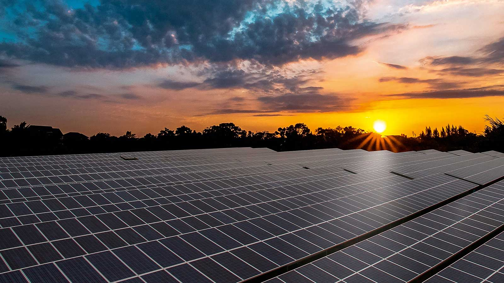

Projeto de Reflorestamento: Floresta Verde

O projeto "Floresta Verde" é uma iniciativa de reflorestamento que visa recuperar áreas de floresta tropical
degradada, restaurando ecossistemas essenciais para a biodiversidade. Com o plantio de milhares de árvores
nativas, estamos promovendo a absorção de CO2, um dos maiores responsáveis pelas mudanças climáticas. Este
projeto não só combate a poluição do ar, mas também cria um habitat para inúmeras espécies de fauna e flora,
garantindo um futuro mais sustentável. Ao investir neste projeto, você contribui diretamente para a regeneração
ambiental, ajudando a combater a perda de biodiversidade e mitigando os efeitos do aquecimento global.
Créditos Disponíveis: 812 de 1000
"Investi no projeto Floresta Verde e estou muito feliz em ver o impacto positivo que ele tem na natureza.
Uma
forma fácil de fazer a diferença!"
- João Silva, apoiador do projeto
Projeto de Energia Solar: Sol Verde

O projeto "Sol Verde" foca na instalação de sistemas de energia solar em comunidades rurais e isoladas, onde a
energia elétrica convencional é escassa ou inexistente. Com painéis solares de última geração, as famílias dessas
regiões agora têm acesso à energia limpa, sustentável e de baixo custo. Além de melhorar a qualidade de vida, o
projeto promove a independência energética, reduzindo a dependência de combustíveis fósseis e diminuindo as
emissões de gases de efeito estufa. Este é um passo importante para um futuro mais verde, onde a energia renovável
seja a principal fonte de eletricidade para todos.
Créditos Disponíveis: 250 de 500
"Este projeto trouxe eletricidade para minha comunidade e melhorou nossa qualidade de vida. Uma verdadeira
mudança!"
- Maria Costa, apoiadora do projeto
Projeto de Conservação de Corais: Oceano Vivo

O projeto "Oceano Vivo" foca na restauração e proteção dos recifes de corais, que são vitais para a vida
marinha. Infelizmente, devido às mudanças climáticas, os corais estão morrendo a uma taxa alarmante, o que ameaça
milhões de espécies marinhas. Através de técnicas de cultivo e replantio de corais, estamos criando um ambiente
propício para a regeneração desses ecossistemas. Além disso, o projeto envolve as comunidades locais,
sensibilizando sobre a importância de proteger nossos oceanos e as formas de vida que dependem dele. Ao apoiar o
"Oceano Vivo", você estará contribuindo para a preservação de um dos maiores patrimônios naturais do planeta,
garantindo a saúde dos oceanos para as gerações futuras.
Créditos Disponíveis: 400 de 890
"Apoiar a conservação de corais é essencial para manter nossos oceanos saudáveis. Recomendo a todos!"
- Carlos Oliveira, apoiador do projeto